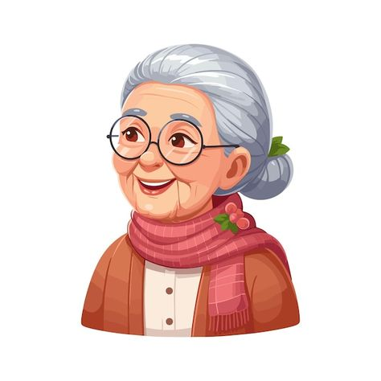
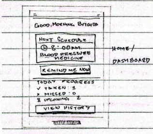
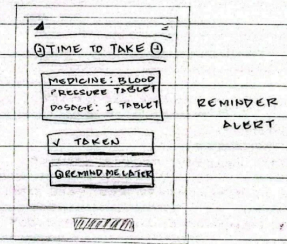
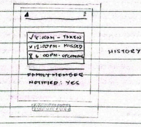

Stephanie Santos
Stephanie Santos
Stephanie Santos
Stephanie Santos

Name: Brigida A. Santos
Age: 64 years old
Occupation: Housewife
Location: Macamias, Guimba, Nueva Ecija
Goals: Take maintenance medicine on time, maintain good health and avoid hospital visit.
Pain Point: Forgets medication schedules and unsure if medicine was already taken.
Motivation: Stay healthy. Reduce reliance on family members and feel safe.
Technology: Smarthphone and alarm clock
Typical Day:Brigida wake up early, eats meals on schedule, watche televison and rest in the afternoon.
takes maintenance medicine severals time a day but often forgets the correct time when no one around to remind her.
Needs:A simple medicine reminder system. Easy to press button,
loud sound alerts, visual reminders and family notification if does is missed.
Activity: Brigida realizes she often forgets to take her medicine.
Touchpoins: Family members remind her.
Emotion: 😵 Confused, 😨 Worried
Pain Point: No consistent reminders.
Opportunity: Introduce a simple reminder app.
Activity: Family helps Brigida install the medicine reminder app.
Touchpoins: Mobile phone app setup screen.
Emotion: 🤔 Curious, 🫤 Slightly Confused
Pain Point: Difficulty understanding technology.
Opportunity: Easy to understand and simple instruction
Activity: Brigida receives a medicine alerts
Touchpoins: Alarm sounds and on screen notification.
Emotion: 😮💨 Relieved, 😊 Confident
Pain Point: May forget to confirm if medicine was taken.
Opportunity: Add a "taken" Confirmation button.
Activity: Brigida taps the "taken" button.
Touchpoins: Confirmation screen
Emotion: 😌 Calm, 🤗 Assured
Pain Point: None
Opportunity: Show daily progress.
Activity: Family receives notificarion every time.
Touchpoins: SMS or app notification to family.
Emotion: 🫠 Safe, 🤗 Assured
Pain Point: Missed does without family knowing.
Opportunity: Automatic Family alerts.
Low-fidelity wireframes for the Persona Things

🏠 Home/Dashboard

🚨 Reminder/ Alert

📱History